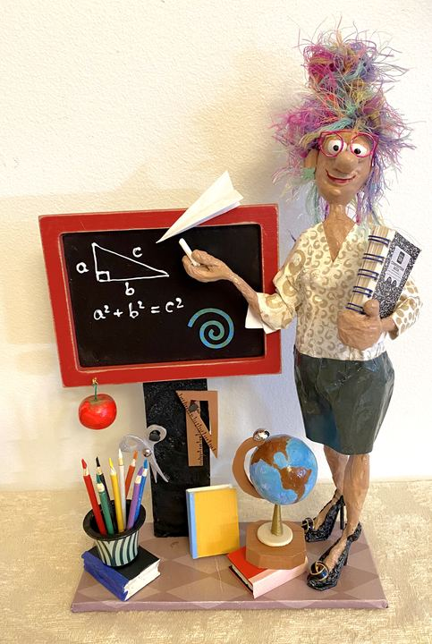
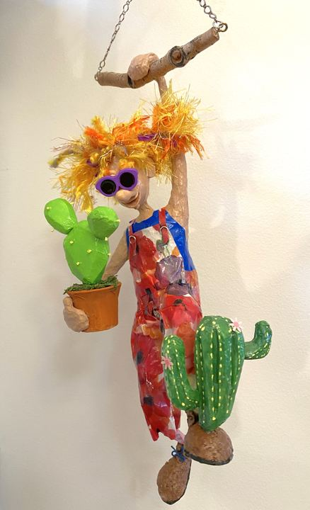
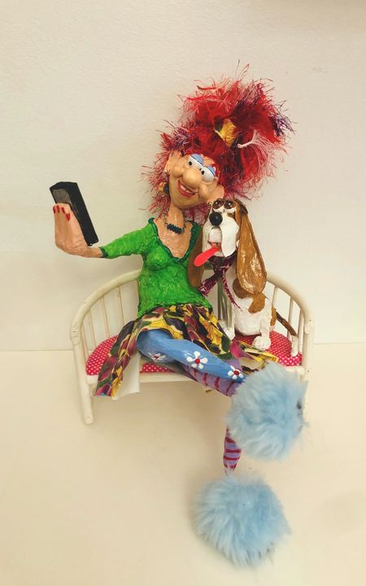
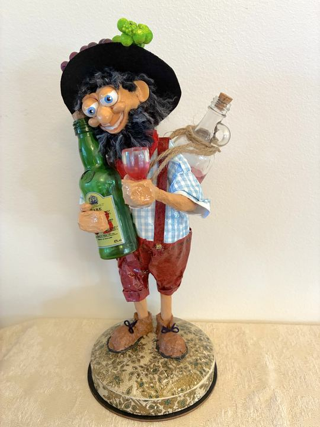
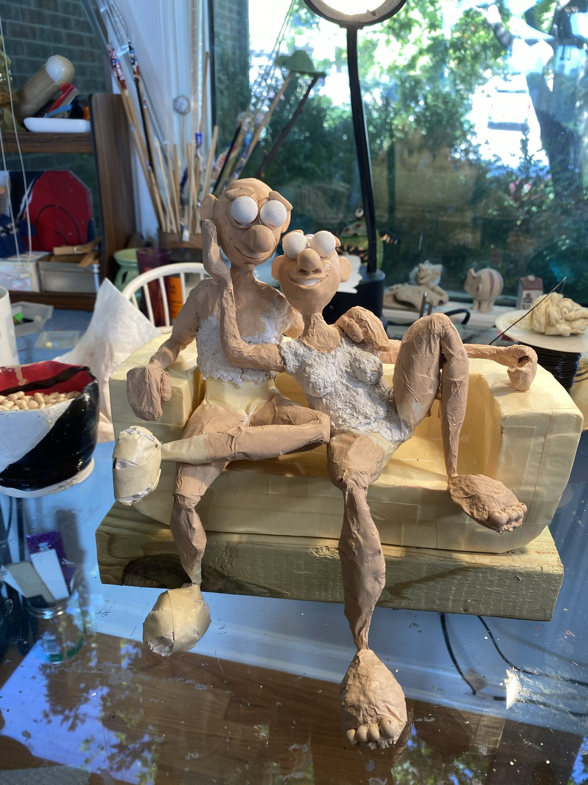
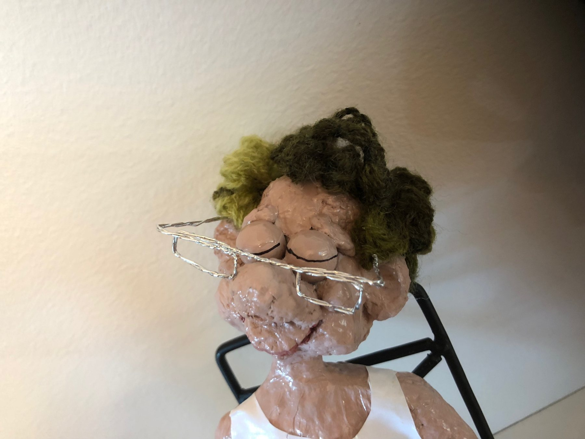

hello there!
hello there!
Whimsical people
in paper mâché
Funny, colorful sculptures of people doing what they love — made by scientist-artist Naava Naslavsky from recycled lab papers, in her little Omaha home studio.


a scientist by day…
Two passions, one happy studio
My name is Naava Naslavsky, and I have two concomitant passions that together make me whole and happy: science & art. In my “real life” I am a scientist, a cell biologist, conducting biomedical research at the University of Nebraska Medical Center in Omaha, NE.
a few favorites
From the studio
 2 views
2 views 3 views
3 views


2 views
 2 views
2 views 2 views
2 views

2 views 2 views
2 views 2 views
2 views
2 views 3 views
3 views 4 views
4 views
find your people
Browse by theme


made from recycled science
How I make them
Shredded lab papers, a wire skeleton, a clay face full of character, then paint and gloss. Every piece takes about three weeks.



a gift like no other
Commission a sculpture
Tell me about someone special — their job, hobby, passions, anything — and I’ll turn them into a one-of-a-kind whimsical sculpture. I also take special orders from galleries.
- $110–170for a single sculpture, depending on size & complexity
- $210–260for two figures
- 3–4 weeksfrom our first email-chat to a finished piece
- UPS groundcarefully packed and shipped to your door